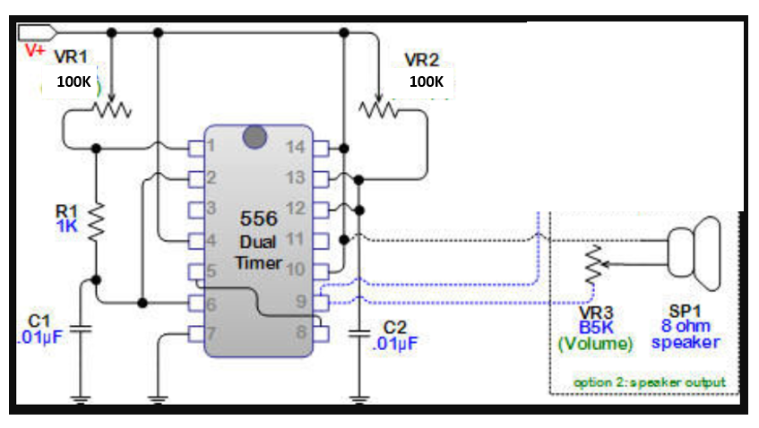
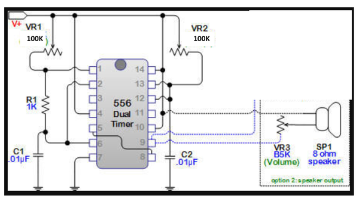
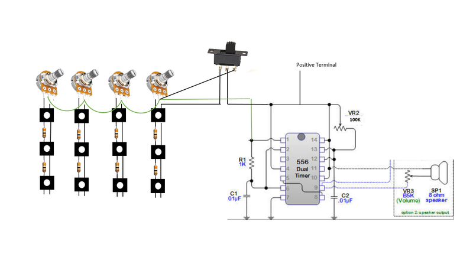

The Atari Punk Console is a great little circuit that uses either 2 x 555 timers or 1 x 556 timer. 2 potentiometers are used to control the frequency and the width of the pitch and if you listen very carefully, it kinda sounds like an Atari console playing some old school games. It’s also simple to make and a great beginners circuit.
Whilst playing around with the circuit recently I realised that I could use momentary on/off buttons and resistors to change it into an organ. Adding a few more potentiometers allowed me to control the frequency of each row of switches. Now that I had created an organ, I needed a case to put it into. I had a vintage calculator lying around which I couldn’t get working and decided to use this to house the organ.
I also made sure that you could still use the circuit as an Atari Punk Console by adding a switch, which turns off the organ section.
I reckon you could also add this to a small keyboard and add a pot to each key so you could tune it. That’s a project for another ‘ible…


Parts:
Tools:



There are 2 circuits that you will need to build for this project. One is the Atari Punk Console, and the other is a button matrix for the organ. I won’t be doing a step by step walkthrough on how to make the circuit for the Atari Console for a couple because; they are easy to build, there is plenty of info on-line if you need it, and I already had one done for another project!
As I build the button matrix from scratch, I will do a walkthrough on this.


This is a very simple circuit so I didn’t bother doing a step by step walkthrough. Just follow the schematic that I provided and you will be fine. Also, make sure you breadboard first to make sure you have everything working as it should be.
The circuit I put together was the smallest that I could get it. That’s because I was initially going to put it inside a cassette tape but it was still too big to fit. The size you make the circuit will depend on the size of the case that you use.


As the title of this 'ible indicates, I used an old calculator as the case. You will probably have a different case than me but I'll still go through how I used the calculator to make the organ.
Steps:


I had to work out how I was going to add the tactile switches so they would align with the button holes. I decided to use a prototype board and used this to attach the switches to.
Steps:



Now it's time to connect the switches together
Steps:


Next thing to do is to dd a speaker to the case. I went for a rectangle speaker as it was the perfect size to fit where the numbers were displayed.
Steps:
Wiring to the circuit board will come a little later


Steps:


Steps: